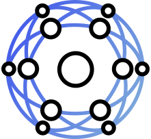

The Forum for Delay-Tolerant and Space Networking Research
IEEE WiSEE 2026 — September 14–16, 2026
The Space-Terrestrial Internetworking Workshop (STINT) brings together researchers and practitioners working on networking challenges in space-terrestrial environments. The workshop focuses on cutting-edge research in space networking, including Delay-Tolerant Networking (DTN), Internet of Things (IoT) in space, routing protocols, and hybrid space-terrestrial architectures.
STINT provides a forum for discussing the latest advances in space-terrestrial internetworking, including protocol design, network architectures, security, and applications. The workshop encourages submissions that address both theoretical and practical aspects of networking in challenging space environments.
We invite full original research papers (6 pages) on all aspects of space-terrestrial internetworking. All submissions will be peer-reviewed and accepted papers will be published in the IEEE WiSEE 2026 proceedings and indexed in IEEE Xplore, provided they are presented on-site.
Papers must follow the IEEE conference template (double-column, 10pt font) and should be submitted in PDF format through the IEEE WiSEE 2026 submission portal in EDAS (select the STINT track under "Workshop Tracks").
Submission GuidelinesJohns Hopkins University APL, USA
"Great networks start with great nodes: building routers for the solar system internet"
Edward Birrane is a principal staff engineer at the Johns Hopkins University Applied Physics Laboratory (APL), specializing in delay-tolerant networking and space communication protocols. He has been instrumental in designing and standardizing the Bundle Protocol and related DTN architectures for deep space missions.
LinkedInD3TN GmbH, Germany
"Simplifying Consumption of Delay- and Disruption-tolerant Networking Capabilities"
Marius Feldmann is the CEO of D3TN GmbH, a company focused on making DTN technology accessible and deployable for real-world space and terrestrial applications. He leads efforts to bridge the gap between DTN research and operational deployment.
LinkedInEuropean Space Agency (ESA)
"DTN – Standardisation & Governance: A Perspective from the European Space Agency"
Felix Flentge leads the European Space Agency's Solar System Internet (SSI) work on Disruption Tolerant Networking in international standardisation and coordination bodies such as the CCSDS, IOAG, and LunaNet. At ESA, he is responsible for various DTN-related activities covering operational deployment, product development, industrial studies, and academic research.
LinkedInSpatiam Corporation, USA
"From Missions to Infrastructure: Building the Interplanetary Network."
Alberto Montilla is Co-Founder and President of the Board of Spatiam Corporation. Under his leadership Spatiam has built and validated a DTN-based space communications platform aboard the International Space Station, and has been selected by NASA to develop networking functions for lunar 5G and interplanetary quality-of-service.
LinkedInTwo full days, single track. Four keynotes, invited talks, peer-reviewed papers, dedicated MISSION and D3-CONNECT sessions, a poster session, and a closing panel.
This is a tentative, preliminary program — sessions, talks, and times are subject to change.
W-KAST: Predictive Optical Link-State Estimation for LEO
Qingfang Jiang et al.
Stabilizing the LEO Control Plane with Area Proxy for IS-IS
Yoshiki Uchida et al.
User QoS Extension Block (UQEB) for Space DTNs
Teresa de Jesús Algarra Uliarte et al.
Interfacing Strategies for DTN Inter-Networking
Théo Tchilinguirian & Olivier De Jonckère
Reducing Topology Advertisements via Ground-Station Handover Scheduling
Nicolas Rybowski et al.
Algebro-Geometric Foundations for Temporospatial Network Modeling
Alan Hylton · NASA
Quantifying the Value of ISLs for Autonomous Orbit Determination in the Solar-System Internet
Alice Le Bihan et al.
The Open DTN of Things Platform: Architecture, Deployment, and Future Directions
Samo Grasic's student (TBD)
June 15, 2026 (firm)
July 1, 2026
August 14, 2026
August 14, 2026
September 14–15, 2026
STINT 2026 will be held at KU Leuven, one of Europe's oldest and most renowned research universities, founded in 1425. Located in the historic city of Leuven, Belgium, KU Leuven is consistently ranked among the most innovative universities in Europe.
Leuven is easily accessible from Brussels Airport (BRU), approximately 30 minutes by train, and is well connected to major European cities.
KU Leuven WebsiteInria-CONICET
General Chair
NASA JPL (Retired)
General Chair
Johns Hopkins University APL
General Chair
D3TN
General Chair
Bologna University
Program Co-Chair
The Space-Terrestrial Internetworking Workshop (STINT) was established to bring together researchers and practitioners working on networking challenges in space-terrestrial environments. Since its inception, STINT has grown to become a premier forum for discussing the latest advances in space networking.
STINT has been co-located with several major conferences, including IEEE WiSEE, IEEE ICC, and IEEE Globecom. Each edition has contributed to advancing the state of the art in space-terrestrial internetworking, with papers and discussions that have influenced both research and operational systems.
For questions about paper submissions, registration, or general inquiries, please contact the organizing committee.